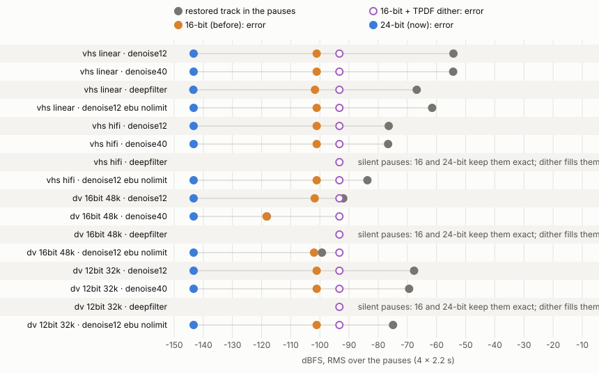

24-bit PCM for an editing intermediate's restored audio
pcm_s24le; in24 in MOV)
in every container, instead of 16-bit. The render it comes from is 32-bit float.
- 16-bit is not audible. Its error is −101 dBFS. Where it matters is far below anything heard at a normal level.
- 16-bit does lose what the restoration made. After noise reduction on DV audio the pauses sit at −92 to −118 dBFS. Rounding to 16-bit erases 45–100% of their samples, and what is left is distortion rather than noise. Where DeepFilterNet fades to silence, 41–63% of the fade's last samples are erased. Triangular dither replaces that with noise as loud as, or louder than, the pauses themselves.
- 24-bit keeps them. Its error is −143 dBFS. It costs +0.77 Mbit/s for 48 kHz stereo, between 0.3% (v210 SD) and 5.5% (ProRes Proxy SD) of the file.
- It is what MKV already gets. A restored track in MKV is FLAC, and ffmpeg writes FLAC from the float render at 24 bits. FLAC in MKV, and 24-bit PCM in MOV, MKV and AVI, all decode to the same samples, byte for byte.
AudioCodec::Pcm is still pcm_s16le. That is the user's Convert → PCM choice and a value
shared with the app. The restored track gets its own type, RestoredTrackCodec. The 16-bit
intermediate track from the earlier report was never released.
Added 2026-11-15 (F6): AVI beside every codec is 24-bit too. The restored
track in AVI beside FFV1, HuffYUV, FFVHuff or H.264 was the last 16-bit one. It is now pcm_s24le, after
measuring what Windows' AVI readers and VirtualDub make of the WAVE_FORMAT_EXTENSIBLE header that
24-bit PCM in AVI requires.
Method
Fixtures are generated by the script, not committed. They use the speech in the committed
Tests/TestResources/small_clip.mp4 (5–19 s). It is tiled into four 10 s blocks with 3 s pauses, and
then a fifth block fades out over 56–62 s. The speech is set to −24 dBFS RMS over voiced windows, with peaks
around −6. Each medium's hiss is added at its typical distance below the speech, and the result is stored at the
medium's depth:
| Medium | Hiss | Level | Stored as |
|---|---|---|---|
| VHS linear | pink | −64 dBFS (~40 dB below speech) | 24-bit 48 kHz capture |
| VHS Hi-Fi | pink | −84 dBFS (~60 dB) | 24-bit 48 kHz capture |
| DV 16-bit | white | −90 dBFS (~66 dB) | 16-bit 48 kHz |
| DV 12-bit | white | −72 dBFS (~48 dB) | 12-bit in 16, 32 kHz |
The render is the worker's own. vapourbox-worker --audio-plan prints every
argument list for a job (ProRes in MOV, Passthrough), and the script runs them in the order
AudioRestorer::render does. The only list it cannot print is the finish run's with loudness
measured, because that depends on the measurement. The script inserts that loudnorm stage in the
format of AudioPlan::finish_filter_chain. There are four restoration cases. All use the panel's
defaults otherwise: loudness −16 LUFS, limiter at −1 dB.
- NR 12 dB:
afftdnat the default strength, with the measured noise floor - NR 40 dB: the slider's maximum
- DeepFilterNet at 100 dB attenuation (the default)
- NR 12 dB at −23 LUFS with no limiter, to look for overs
Encodes. Each float render is muxed beside ProRes in MOV three ways. Each is decoded and compared sample by sample with the float render:
-c:a pcm_s16le: what the intermediates got before-c:a pcm_s16leafteraresample=dither_method=triangular(TPDF dither)-c:a pcm_s24le: what they get now
Measures:
- Pause floor: RMS of the render over the pauses (10.4–12.6 s of each 13 s block).
- Error: RMS of decoded minus float, in the pauses.
- Zeroed: the share of non-zero float samples that came out exactly zero, in the pauses and in the fade tail (60–64 s).
- Correlation: between error and signal in the pauses. Near 0, the error is noise. Far from 0, it is distortion.
- Overs: float samples above full scale. Integer PCM at any depth clips these.
What these numbers can't tell you:
- RMS is not loudness, and nothing is A-weighted.
- There was no listening test.
- The hiss is synthetic, over one speaker's voice. Real tape noise is less stationary, so
afftdnwould leave more in some pauses and less in others. - One machine, macOS.
F1 · Error against what the restoration leaves in the pauses

- When orange is far left of grey, the rounding is buried in what is already there.
- In the DV 16-bit rows the grey dot meets the orange: rounding is as large as the signal.
- At NR 40 dB the two are the same point (−118 dBFS): every sample in the pauses was rounded to zero.
- Purple sits at −93 in every row. Dither adds that noise, including to pauses that were silent.
F2 · Every case
| Medium | Restoration | Pause floor (dBFS) | 16-bit (before) | 16-bit + TPDF | 24-bit (now) | Peak | Overs | ||||||
|---|---|---|---|---|---|---|---|---|---|---|---|---|---|
| error | margin dB | pause zeroed % | tail zeroed % | corr | error | error | pause zeroed % | tail zeroed % | |||||
| VHS linear | NR 12 dB | −54.2 | −101.1 | 46.9 | 0.7 | 0.5 | +0.00 | −93.3 | −143.3 | 0.0 | 0.0 | −1.5 | 0 |
| VHS linear | NR 40 dB | −54.3 | −101.1 | 46.8 | 0.7 | 0.5 | +0.00 | −93.3 | −143.3 | 0.0 | 0.0 | −1.5 | 0 |
| VHS linear | DeepFilterNet 100 dB | −66.8 | −101.7 | 34.9 | 20.5 | 5.7 | −0.01 | −93.3 | −143.4 | 2.6 | 0.0 | −1.7 | 0 |
| VHS linear | NR 12 dB, −23 LUFS, no limiter | −61.5 | −101.1 | 39.6 | 1.6 | 1.1 | −0.00 | −93.3 | −143.3 | 0.0 | 0.0 | −7.0 | 0 |
| VHS Hi-Fi | NR 12 dB | −76.4 | −101.1 | 24.7 | 8.7 | 4.2 | +0.00 | −93.3 | −143.3 | 0.0 | 0.0 | −1.5 | 0 |
| VHS Hi-Fi | NR 40 dB | −76.6 | −101.1 | 24.5 | 8.9 | 4.2 | +0.00 | −93.3 | −143.3 | 0.0 | 0.0 | −1.5 | 0 |
| VHS Hi-Fi | DeepFilterNet 100 dB | silence | silence | — | 0.0 | 60.4 | +0.00 | −93.3 | silence | 0.0 | 10.3 | −1.5 | 0 |
| VHS Hi-Fi | NR 12 dB, −23 LUFS, no limiter | −83.7 | −101.1 | 17.4 | 19.8 | 9.5 | +0.00 | −93.3 | −143.3 | 0.1 | 0.0 | −7.4 | 0 |
| DV 16-bit 48 kHz | NR 12 dB | −92.0 | −101.8 | 9.8 | 45.0 | 20.9 | +0.13 | −93.3 | −143.3 | 0.5 | 0.2 | −1.5 | 0 |
| DV 16-bit 48 kHz | NR 40 dB | −118.2 | −118.3 | 0.1 | 100.0 | 54.9 | −0.98 | −93.3 | −143.3 | 10.1 | 4.5 | −1.5 | 0 |
| DV 16-bit 48 kHz | DeepFilterNet 100 dB | silence | silence | — | 0.0 | 63.4 | +0.00 | −93.3 | silence | 0.0 | 7.7 | −1.5 | 0 |
| DV 16-bit 48 kHz | NR 12 dB, −23 LUFS, no limiter | −99.3 | −102.0 | 2.7 | 85.9 | 46.6 | −0.28 | −93.3 | −143.3 | 1.2 | 0.5 | −7.4 | 0 |
| DV 12-bit 32 kHz | NR 12 dB | −67.7 | −101.1 | 33.4 | 7.3 | 3.5 | −0.00 | −93.3 | −143.3 | 0.0 | 0.0 | −1.5 | 0 |
| DV 12-bit 32 kHz | NR 40 dB | −69.4 | −101.1 | 31.7 | 5.9 | 2.9 | +0.00 | −93.3 | −143.3 | 0.0 | 0.0 | −1.5 | 0 |
| DV 12-bit 32 kHz | DeepFilterNet 100 dB | silence | silence | — | 0.0 | 40.8 | +0.00 | −93.3 | silence | 0.0 | 13.5 | −1.6 | 0 |
| DV 12-bit 32 kHz | NR 12 dB, −23 LUFS, no limiter | −74.9 | −101.1 | 26.2 | 16.5 | 8.2 | −0.00 | −93.3 | −143.3 | 0.1 | 0.0 | −7.3 | 0 |
Error and floor are RMS in the pauses, in dBFS. Margin = floor − 16-bit error. "Zeroed" counts non-zero float samples that came out exactly 0. "silence" means the render's pauses are exact zeros, which every integer depth keeps. Over the whole track the 16-bit error is −101.1 to −103.0 dBFS, the dithered one −93.3, and 24-bit −143.3 to −144.5.
Reading it
- VHS linear, and DV 12-bit: 26–47 dB of margin. 16-bit rounds 0.7–21% of the pauses' samples to zero. That is a little more where DeepFilterNet leaves a quiet residue, and it is uncorrelated (|corr| ≤ 0.01). No measurable harm.
- VHS Hi-Fi: 17–25 dB of margin. 9–20% of pause samples are zeroed, uncorrelated. Not a problem at any normal gain.
- DV 16-bit: the restoration takes the pauses down to −92 (NR 12), −99 (EBU, no limiter) and −118 dBFS (NR 40). Those levels are near or below 16-bit's own step. Rounding then erases 45%, 86% and 100% of the pauses' samples. The error correlates with the signal (+0.13, −0.28, −0.98), so it is distortion and gating, not noise. At NR 40 the 16-bit file's pauses are digital silence where the restoration made a −118 dBFS residue.
- DeepFilterNet fades: DeepFilterNet's pauses are exact zeros, which both depths keep. Its fade-outs decay towards those zeros. Where the pauses are silent (Hi-Fi and both DV rows), 16-bit zeroes 41–63% of the tail samples and 24-bit 8–14%.
- TPDF dither makes the error noise at −93.3 dBFS. That is about as loud as the noisiest DV pauses it "protects" (−92) and up to 25 dB louder than the quietest, and it adds noise to DeepFilterNet's silent pauses. It is the wrong fix here.
- Overs: none, in any case, even at −23 LUFS without the limiter (peaks −7 dBFS):
loudnorm's −1.5 dBTP ceiling holds them. So integer PCM's clipping above full scale costs nothing in these cases. 32-bit float PCM (fl32) was not needed for that, and is not proposed.
None of this is audible at a normal listening level. Even DV's pauses at −92 dBFS are 70 dB under the speech. The case for 24-bit is not an audible fault. It is that a file made for editing should hold what the restoration produced, for the editor to gain, gate or mix as they choose, and that keeping it costs almost nothing (F5).
F3 · What each muxer writes
| Video / container | Audio as muxed | Header | s32 decode MD5 |
|---|---|---|---|
| ProRes / MOV | pcm_s24le, tag in24 | SoundDescription v1, wave → frma in24 + enda 1 (little-endian): Apple's documented form | 45a03105… |
| v210 / MOV | pcm_s24le, in24 | same | 45a03105… |
| v210 / MKV | pcm_s24le | A_PCM/INT/LIT, 24 bits | 45a03105… |
| v210 / AVI | pcm_s24le | WAVE_FORMAT_EXTENSIBLE (0xFFFE), 24 bits, 24 valid, subformat PCM | 45a03105… |
| H.264 / MKV (any non-intermediate) | FLAC, s32, bits_per_raw_sample 24 | A_FLAC | 45a03105… |
| v210 / AVI, big-endian | pcm_s24be | refused: "Could not write header (incorrect codec parameters ?)" | — |
The same float render (DV 16-bit, NR 12) muxed six ways. All five that mux decode to identical
samples, so ProRes/v210 now carry exactly what an MKV gets. The little-endian codec is the one that works in all
three containers, which is why it is used in MOV too. The 16-bit track it replaces was sowt, also
little-endian.
F4 · AVFoundation reads it
== AVFoundation: prores_mov.mov format lpcm, 24 bits, flags 0xc (little-endian), 48000 Hz, 2 ch decoded 96000 frames, reader status completed samples: identical to ffmpeg's decode (768000 bytes) == AVFoundation: v210_mov.mov format lpcm, 24 bits, flags 0xc (little-endian), 48000 Hz, 2 ch decoded 96000 frames, reader status completed samples: identical to ffmpeg's decode (768000 bytes)
scripts/avf_read.swift reads the MOV's audio track the way QuickTime and Final Cut
Pro do (AVAssetReader, to 32-bit integers). It reports 24-bit little-endian LPCM, and its samples
equal ffmpeg's byte for byte.
F5 · What it costs
| Video (4 s, noisy test pattern) | Video Mbit/s | +0.77 Mbit/s is |
|---|---|---|
| ProRes 422 Proxy, 720×576 25p | 12.5 | 5.5% of video + 16-bit audio |
| ProRes 422 HQ, 720×576 25p | 63.7 | 1.2% |
| v210, 720×576 25p | 221.2 | 0.3% |
| ProRes 422 HQ, 1920×1080 25p | 192.5 | 0.4% |
48 kHz stereo PCM is 1.536 Mbit/s at 16-bit and 2.304 at 24-bit. ProRes rates depend on the picture: a cleaner source than this noisy pattern gives a lower Proxy rate, and a larger share for the audio.
F6 · AVI beside a codec that isn't an intermediate (added 2026-11-15)
Until this section, a restored track in AVI beside FFV1, HuffYUV, FFVHuff or H.264 stayed 16-bit (see "Not
changed" below). The depth argument is the same as for ProRes and v210 (F1, F2), and the same track in MKV was
already 24-bit FLAC. The open question was whether AVI's readers accept it. ffmpeg writes PCM above 16 bits in AVI
only as WAVE_FORMAT_EXTENSIBLE: riffenc forces it, and the AVI muxer has no option for a
plain WAVE_FORMAT_PCM header. People often pick AVI for older Windows tools, and a track that an
editor drops would be much worse than an inaudible rounding error.
Method
- Fixtures (
scripts/avi_readers/make_fixtures.py, the deps bundle's FFmpeg 9.0.2): FFV1, HuffYUV and H.264 AVIs withpcm_s24le, plus FFV1 withpcm_s16leas the control. The audio is 2.5 s of 48 kHz stereo: a −60 dBFS tone (440 Hz left, 660 Hz right, so a channel swap shows), a 1 s fade to −120 dBFS, then silence. Below −96 dBFS the 24-bit file holds detail 16 bits cannot, so a reader that quietly drops to 16 bits fails the comparison. - Windows: GitHub's
windows-latestrunner (Windows Server 2025, build 26100), run 43615865234.scripts/avi_readers/avi_readers.cpp(MSVC) reads each file through Video for Windows'AVIStreamRead, through ACM (converting to 16-bit, with the format as stored and again restated as plain 0x0001), through DirectShow (File Source → AVI Splitter → Sample Grabber → Null Renderer) and through Media Foundation's Source Reader.virtualdub.ps1runs VirtualDub 1.10.4 and VirtualDub2 build 44282 (pinned by SHA-256), saving the audio with direct stream copy and with full processing. A warm-up run clicks through each one's first-run dialogs.compare.pycompares every result with the stored samples. - macOS: VLC 3.0.23 transcoding to 32-bit WAV (
vlc_read.sh).
The header
wFormatTag 0xFFFE (WAVE_FORMAT_EXTENSIBLE), 2 ch, 48000 Hz, nBlockAlign 6, wBitsPerSample 24 cbSize 22, wValidBitsPerSample 24, dwChannelMask 0x3, SubFormat 00000001-0000-0010-8000-00AA00389B71 (PCM)
The same for all three video codecs (data/avi_fixture_headers.jsonl). This is the form
Microsoft's documentation asks for above 16 bits. The 16-bit control is a plain 16-byte 0x0001 header.
What each reader returned
| Reader | FFV1 + 24-bit | HuffYUV + 24-bit | H.264 + 24-bit | FFV1 + 16-bit (control) |
|---|---|---|---|---|
Video for Windows (AVIStreamRead) | exact | exact | exact | exact |
| DirectShow, AVI Splitter | exact | exact | exact | exact |
| Media Foundation Source Reader | exact¹ | exact¹ | exact¹ | exact¹ |
| ACM → 16-bit, format as stored | refused | refused | refused | exact |
| ACM → 16-bit, restated as plain 0x0001 | refused | refused | refused | exact |
| VirtualDub 1.10.4, direct copy | no video codec² | exact | no video codec² | no video codec² |
| VirtualDub 1.10.4, full processing | no video codec² | exact | no video codec² | no video codec² |
| VirtualDub2 44282, direct copy | exact³ | exact³ | exact³ | exact³ |
| VirtualDub2 44282, full processing | exact³ | exact³ | exact³ | exact³ |
| VLC 3.0.23 (macOS) | exact⁴ | exact⁴ | exact⁴ | exact⁴ |
"Exact" means the reader returned the stored samples. A wider output (VirtualDub2's float WAV,
VLC's 32-bit) counts as exact when every sample is the stored one in its top bits.
Data: data/avi_readers_windows.jsonl, data/avi_readers_vlc_macos.jsonl.
¹ Media Foundation starts 96 frames (2 ms) into the stored audio, and the rest is exact. It does the same with the
16-bit control, so it is how MF's AVI source handles this file, not the depth.
² VirtualDub 1.10.4 stops at "Couldn't locate decompressor for format 'FFV1'" (or 'H264') before it reaches the
audio. It reads video only through Video for Windows codecs, and the runner has none for those formats. The 16-bit
control fails the same way. With HuffYUV, which it decodes itself, the 24-bit track comes out exact in both modes,
saved as a 24-bit extensible WAV.
³ VirtualDub2 saves 24-bit audio as 32-bit float WAV (extensible, subformat float), every sample exact, with 960
frames (20 ms) of padding at the end. The 16-bit control gets the same padding.
⁴ VLC's transcode stops 192 frames short, with the 16-bit control too.
Reading it
- Every layer that hands audio to a Windows program reads it exactly. DirectShow's AVI Splitter
offers the stream as
MEDIASUBTYPE_PCMwith the extensible format block, and Media Foundation reports 24-bit PCM natively. - ACM refuses 24-bit PCM, and the header makes no difference.
acmStreamOpenreturnsACMERR_NOTPOSSIBLEfor the extensible format and for the same data restated as plain 0x0001. It converts the 16-bit control. So a tool that converts audio through ACM can't take 24-bit PCM in any form. That argues against 24 bits at all for such tools, not against this header. VirtualDub 1.10.4's full processing doesn't go through ACM for this, and it kept all 24 bits. - VirtualDub, old and new, keeps all 24 bits, in both modes.
- Resolve documents it. Blackmagic's own Supported Formats and Codecs lists, for 16.2 (2020) and for 20 (July 2025), embedded audio in "mov, mxf, r3d, mp4, avi, etc." as decoding "all decodable audio formats listed above", among them uncompressed PCM at 16, 24 and 32 bits. Exports are listed as "Linear PCM 16/24/32-bit". A 2017 forum report quoted Blackmagic support saying Resolve "does not (yet) support 24-bit audio" in uncompressed AVI. That predates these lists, and could not be read in full (the forum refuses automated fetches).
What this cannot tell you. A runner is Windows Server with no audio device, not a desktop Windows 10/11 with an audio driver, so playback through an audio renderer was not exercised. One synthetic signal was used. Premiere Pro and Vegas use their own AVI importers, and neither was run. Forum posts (snippets only, versions and headers unstated) describe a Vegas Pro 16 user getting no audio from a 24-bit AVI capture, and Premiere importing an AVI with unsupported audio as video only.
Decision
AVI gets 24-bit PCM beside every codec. This follows the rule fixed in the plan before the run:
switch if Video for Windows, DirectShow, Media Foundation and VirtualDub2 return the samples exactly, VirtualDub
1.10.4 at least opens and copies the track, and nothing shows Premiere or Resolve dropping it. ACM refusing it is
recorded as a limit, not a reason. For a reader that needs 16 bits, Output → Audio → Convert → PCM still writes
pcm_s16le. RestoredTrackCodec::Pcm16 no longer has a use and is removed.
Correction during the work
The first run of the probe (and the pilot in the plan) used
small_clip.mp4 from 20 s on, at 0.7× its level. That part of the clip is mostly music, which
DeepFilterNet removes, and the speech was at about −40 dBFS RMS against −45 dBFS hiss, a 5 dB signal-to-noise
ratio no capture has. With loudness normalisation lifting everything by 20 dB or more, that run put every pause
at −24 to −78 dBFS. It found 24 dB or more of margin everywhere, and "16-bit is measurable only in fade tails".
The fixture now uses only the clip's speech, at −24 dBFS, with each medium's hiss at its usual distance below
it. That moved the DV pauses down to the 16-bit step, which is the main finding above. The decision (24-bit) is
the same either way. The reason is now stronger.
Decisions
- 24-bit PCM (
pcm_s24le) for the restored track beside ProRes and v210, in every container (restored_passthrough_codec). It keeps what the restoration made (F2), it is what MKV already carries (F3), editors read it (F4), and it costs 0.3–5.5% (F5). - Its own type,
RestoredTrackCodec{Aac, Flac, Pcm16, Pcm24}, not a newAudioCodecvalue. A new value would either reach the app's Convert menu or exist on one side of the JSON only.AudioCodec::Pcmstayspcm_s16le. Exhaustive matches, no catch-all. - AVI beside every codec: 24-bit PCM too (added 2026-11-15, F6). With that,
RestoredTrackCodecis {Aac, Flac, Pcm24}. - No dither: at 24 bits there is nothing to dither, and at 16 it measured worse (F2).
- No
-sample_fmt:pcm_s24letakes onlys32, so swresample converts float to s32 (rounding, clipping at full scale) and the encoder keeps the top 24 bits. That is the path FLAC takes, hence the identical samples. - Not changed:
- Convert → PCM: the user's explicit choice, still 16-bit.
The restored track in AVI beside a non-intermediate (FFV1, HuffYUV, H.264): still 16-bit, the last 16-bit restored track. That is a separate decision.2026-11-15: decided in F6. It is now 24-bit too.- A track copied without restoration: untouched, as before.
Verification
- Rust:
restored_passthrough_is_24_bit_pcm_beside_intermediatessweepsVideoCodec::ALL× every container:Pcm24exactly when the codec is an editing intermediate.passthrough_copies_the_others_and_encodes_the_restored_trackchecks ProRes MOV and v210 MOV/MKV/AVI give-c:a:0 pcm_s24lewith no bitrate, and that Convert → PCM still givespcm_s16le.restored_track_codec_names_and_the_pcm_wire_valuepins every name, andAudioCodec::Pcm's serde string.
- Heavy (
integration_audio_restoration_test.dart): one job encodes ProRes/MOV and v210 in MOV, MKV and AVI. Each restored stream is checked to bepcm_s24le, 24 bits andin24in MOV. Each must decode to the same s32 samples as the same job's MKV, whose FLAC is checked to be 24-bit. - Added for F6: the sweep is now
restored_passthrough_keeps_24_bits_where_it_can(Pcm24exactly when the codec is an intermediate or the container is AVI, FLAC/AAC otherwise).passthrough_copies_the_others_and_encodes_the_restored_trackchecks AVI beside FFV1, HuffYUV, FFVHuff and H.264, and that Convert → PCM in AVI stays 16-bit. The heavy test adds FFV1, HuffYUV and H.264 in AVI to its loop, each checked against the MKV reference.
Not tested
- Premiere Pro, DaVinci Resolve and Avid Media Composer were not available.
in24with anendaatom is QuickTime's own form for little-endian 24-bit, and ffmpeg has written it this way for years, but no NLE other than Final Cut Pro's decoder (F4) was run on these files. Apple's own exporters writelpcm(SoundDescription v2), and ffmpeg has no option to choose that. - Real tape captures (none in the repo), a listening test, Windows and Linux (for F1–F5).
- For AVI (F6): Premiere Pro and Vegas; Resolve itself (only its documentation was read); playback through an audio device; desktop Windows; DirectShow decoders other than the splitter's own output.
Reproduce
cd worker && cargo build && cd .. WORK=/path/to/scratch docs/reports/2026-11-intermediate-pcm-depth/scripts/run.sh
Needs Python 3 with NumPy, the deps bundle (deps/<platform>), and the DeepFilterNet add-on
for its rows. run.sh runs pcm_depth_probe.py (F1–F3, writing
$WORK/pcm_depth.json), data_rates.sh (F5) and chart.py (Figure 1). On
macOS it also runs avf_read.swift (F4) and, when VLC is installed, the AVI fixtures and VLC's read for
F6 (scripts/avi_readers/make_fixtures.py, vlc_read.sh, compare.py). The run took about 2 minutes on the M1 Pro and needs about 1.6 GB of
scratch space.
F6's Windows half ran on a GitHub-hosted runner, through a one-off workflow
(.github/workflows/probe-avi-readers.yml) that was deleted once its run was recorded. To run it again,
restore that file from this report's commit history (git log --all -- .github/workflows/probe-avi-readers.yml)
and push it on a branch. It downloads the deps bundle, writes the fixtures, builds avi_readers.cpp
with MSVC, fetches both VirtualDubs by pinned hash, runs virtualdub.ps1 and compare.py,
and uploads results.jsonl with VirtualDub's logs and screenshots.